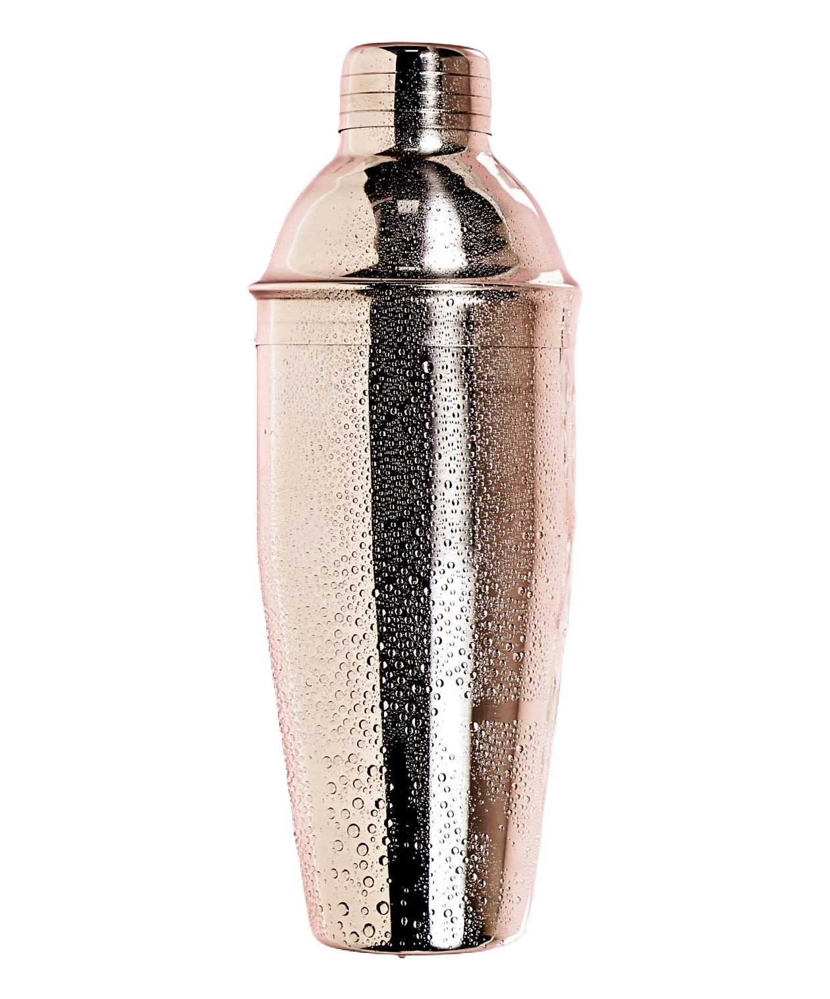
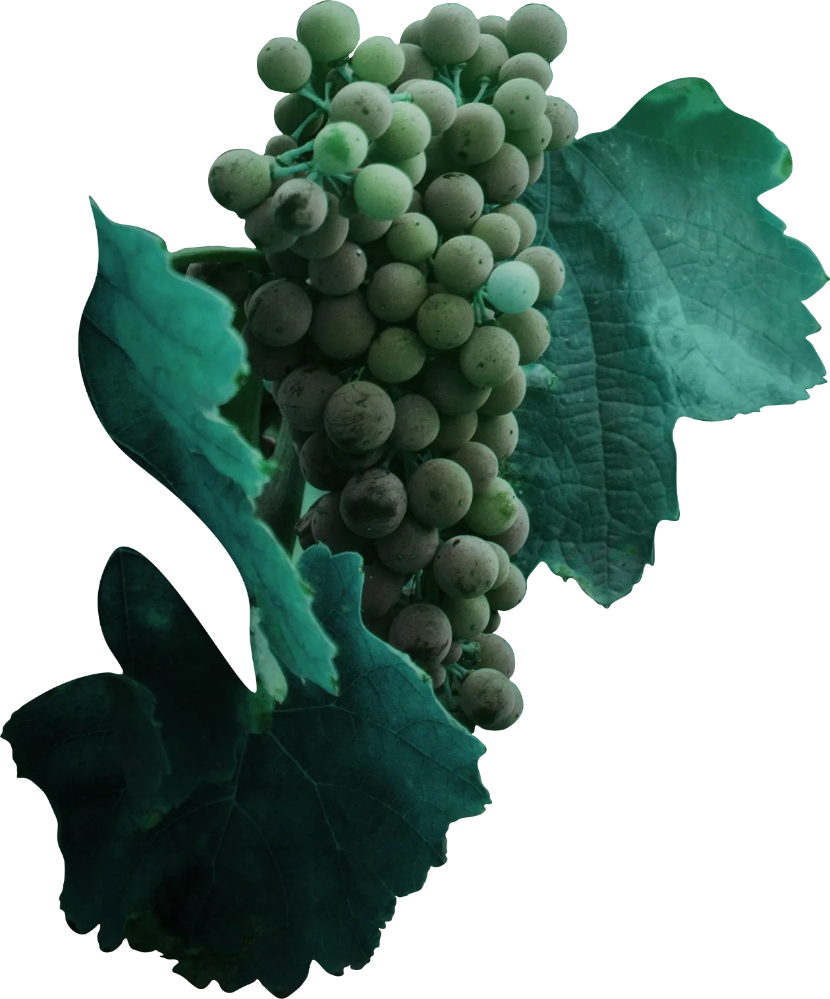
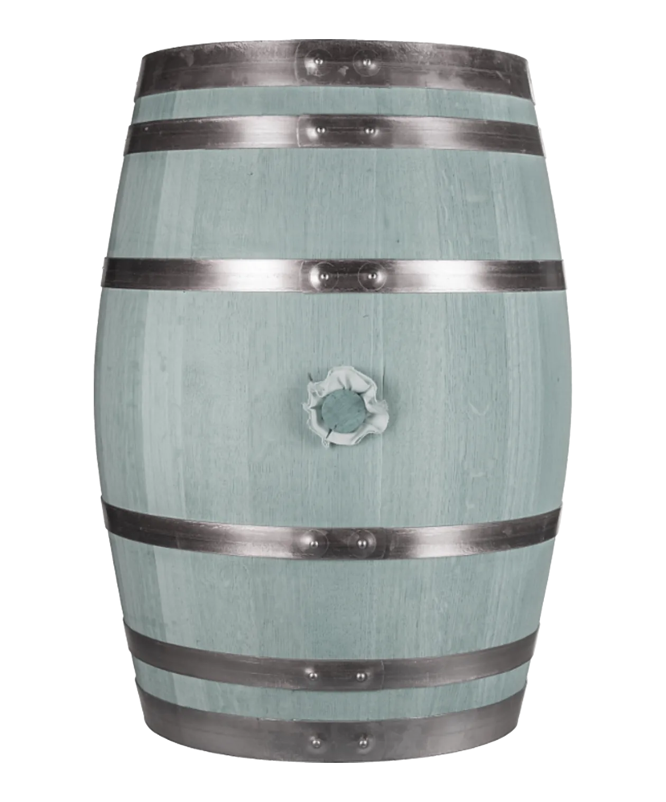

Veuve Clicquot. Brut Rosé
Veuve Clicquot. Ponsardin Brut
Moёt & Chandon. Rosé
Moёt & Chandon. Imperial
Moёt & Chandon. Imperial Brut
- франция. шампань
- пино нуар, пинье менье, шардоне
- зелёные яблоки, свежая выпечка, дыня, минералы
- 12.0%
Moёt & Chandon. Imperial Brut
- франция. шампань
- пино нуар, пинье менье, шардоне
- зелёные яблоки, свежая выпечка, дыня, минералы
- 12.0%
Moёt & Chandon. Imperial Brut
- франция. шампань
- пино нуар, пинье менье, шардоне
- зелёные яблоки, свежая выпечка, дыня, минералы
- 12.0%
Moёt & Chandon. Imperial Brut
- франция. шампань
- пино нуар, пинье менье, шардоне
- зелёные яблоки, свежая выпечка, дыня, минералы
- 12.0%
Moёt & Chandon. Imperial
- франция. шампань
- пино нуар, пинье менье, шардоне
- зелёные яблоки, свежая выпечка, дыня, минералы
- 12.0%
Marquis de Goulaine. Crémant de Loire (A.O.C.)
Martini. Asti (D.O.C.G.)
Botter. Prosecco
I Castelli Romeo e Giulietta. Prosecco
La Chablisienne. Chablis «La Pierrelée»
Barone Ricasoli. «Torricella». Chardonnay di Toscana
Celler Credo. And the Winner is...
Celler Credo. Volaina
Marchese Antinori. Villa Antinori Bianco
Freschello. Vino Bianco
Torres. «San Valentin» Parellada
Alazani Valley
Brancott Estate. Sauvignon Blanc
Cono Sur. «Bicileta» Gewürztraminer
Marchese Antinori. Chianti Classico Riserva
Prunotto. Barbaresco
Barone Ricasoli. Castello di Brolio «Casalferro» Toscana
Brunilde Di Menzione. Primitivo Di Manduria
Dulong. «Prestige» Médoc
Torres. «San Valentin» Garnacha
Ca'Donini. «Donini» Bardolino
Alazani Valley
Zonte's Footstep. Lake Doctor Langhorne Creek Shiraz
Cono Sur. Bicileta. Sauvignon Blanc Blush
Campari
Jägermeister
Martini Vermouth. Bianco
Martini Vermouth. Rosso
Martini Vermouth. Fiero
Martini Vermouth. Extra Dry
Grey Goose
- 40%
Absolut
- швеция. ахус
- 40%
Finlandia
- финляндия
- 40%
Hendrick's
- 44.0%
Monkey 47 Schwarzwald Dry
- германия. шварцвальд
- 47.0%
Bombay Sapphire
- В чистом виде со льдом и лимоном. В составе коктейлей.
- 47.0%
Gordon's
- 37.5%
Zacapa Centenario. Solera Gran Reserva 23 Years Old
- гватемала
- 40%
Bumbu XO
- барбадос
- 40%
Plantation XO
- барбадос
- 40%
Antica Sambuca. Classic
- италия. венето
- 38.0%
Drambuie
- шотландия. броксберн
- 40%
Volare. Triple Sec
- италия. виченца
- 38.0%
Kahlúa
- мексика
- В чистом виде со льдом или с молочными добавками. В составе коктейлей.
- 16.0%
Merrys Irish Cream
- ирландия. келлс
- 17.0%
The Macallan. Double Cask 18 Years Old
- 43.0%
The Macallan. Double Cask 15 Years Old
- 43.0%
The Macallan. Double Cask 12 Years Old
- 43.0%
Aberfeldy 21 years old
- 40%
The Glenlivet 12 Years Old
- 40%
Laphroaig 10 Years Old
- шотландия. айла
- 40%
Chivas Regal. Royal Salute 21 Years Old
- 40%
Chivas Regal 18 Years Old Gold Signature
- 40%
Chivas Regal 12 Years Old
- 40%
Jameson 4 Years Old
- ирландия
- 40%
Bushmills. The Original
- ирландия. графство Антрим
- 40%
Jack Daniel's. Old №7
- США. Теннесси. Линчбург
- 40%
Jim Beam
- США. Кентукки
- 40%
Rémy Martin. Louis XIII
- 100 лет
Rémy Martin V.S.O.P.
- от 4 до 12 лет
Hennessy X.O.
- от 10 до 30 лет
Hennessy V.S.O.P. Privilege
- от 6 до 12 лет
Hennessy V.S.
- от 2.5 до 7 лет
Martell V.S.O.P. Medaillon
- от 4 до 10 лет
Martell V.S.
- от 2.5 до 3 лет
Patrón. Silver / Añejo
- 40%
Olmeca. Silver / Reposado
- 35% / 38%
Porn Star Martini
Clover Club
French 75
Bellini
Rossini Bourbon
Aperol Spritz
Tipsy Aperol Spritz
Hugo Spritz
Trop Top Spritz
Carribean Currant Spritz
Espresso Martini
Bramble
Aviation
K & Roman
Waffle Toy
Margarita
Tommy's Margarita
Tropicana MaMa
Illegal
Part-time Lover
B-52
Clover Shot
Sabrina Shot
Landry Shot
Madonna Shot
Daiquiri
Mai-Tai
Old Cuban
Carribean Sour
Hemingway Special
Gin Sour
Gin Sour Basil-Matcha
Whiskey Sour
Penicillin
Prodigy
Long Island Iced Tea
Moscow Mule Double Ginger
Bloody Mary (I will cry for you)
G&T Gordon's
G&T Bombay
G&T Monkey 47
G&T Hendrick's
G&T Apple Indigo
Red Velvet
Negroni
Arnaud
The Boulevardier
French Connection
Emancipe
White Russian
El Presidente
Cherry Tincture
Currant Tincture
Sea Buckthorn Tincture
Cranberry Tincture



